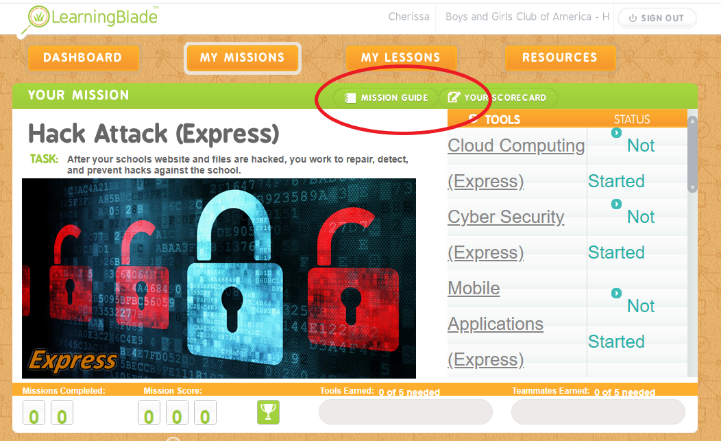

Welcome Boys and Girls Club facilitators to the PowerU Tech Mission Guide
Powered by Learning Blade!
This is the second part of the modular experience that will help students to immerse into the world of STEM
and to
create clear pathways into STEM careers!
Here are a few instructions and hints for you as facilitators of this experience.
SUMMARY
After the STEM-based Escape Room, students will participate in a web-based assignment that aligns with STEM
careers of today. To enable this opportunity, you will leverage a website called Learning Blade to manage
students (as needed) and quickly determine the winner of the game. The total duration of this experience is
approximately 60 minutes.
We have selected 3 missions of similar difficulty from the Learning Blade platform. These missions will
expose the students to STEM skills and careers through solving real-world problems. Generic templates have
been created and uploaded on your behalf; so you can concentrate on creating an exciting and engaging
experience!
THE SETUP (10 min)
- Engage the students by introducing the game and what they are about to learn. See Conversation Guide for
ideas!
- Divide the students into 2-3 groups and assign them to a Class.
- Class 1 = ClassHackAttack
- Class 2 = Class RobotRescue
- Class 3 = HaitiOrphan
- Divide each Class into teams (2-4 students recommended as required by number of devices).
- Team1, Team2, Team3...Team10
- Provide each Class/Team with login credentials as outlined in Appendix A of this reference guide.
HOW TO PLAY (40 min)
- Have each team click to accept and start the mission by logging into Learning Blade.
- Select the assigned mission & view the “Mission Guide”
-
If the Mission Guide doesn't auto play you may manually select it in the upper right-hand portion of
the
green box.

-
Once all teams have completed the Mission Guide; IT'S TIME TO PLAY!
- Set & start a timer for 40 minutes.
- Tasks do not need to be completed in order.
- All team members should take a turn leading a task.
-
Once the game is over; allow students to take a break (as needed) so you can identify the winner.
-
How to determine the Tech Mission winner
- Login to Learning Blade with the provided teacher credentials.
- Navigate to the “Dashboard” tab and Select Class and Mission.
- The tasks completed and the associated points will show under the “Leaderboard” section.
- The team with the most points wins!!
- Announce the winner and prizes!
THE WRAP-UP (10 min)
As each class was assigned a different mission, facilitate a de-briefing discussion where students can share
what they
learned about their mission and tasks. See Conversation Guide.
GOOD TO KNOW INFO, TIPS & TRICKS
- ??
- ● A general guide to facilitate the game and dialogue with the students has been provided in the
Conversation Guide as
reference. Feel free to use and/or adapt as you see fit!
CONVERSATION GUIDE
Tech Mission Game Intro (The SETUP)
Have any of you heard or seen the movie Hidden Figures? Well in the Tech Escape you learned about Dr. Gladys
West which is another one of America’s hidden figures.
She was known for her contributions to the mathematical modeling of the shape of the Earth. Her work led to
the invention of the Global Positioning System; which is also known as?
We also learned about Garrett Morgan, Mark Kean and Marie Van Brittan Brown. Can anyone share with us
something they learned about those pioneers?
- Marie Van Brittan Brown – invented the first video home security system in 1966. It consisted of
peephole, a sliding
camera, television monitors and two-way microphones. This created a system called closed circuit
television system for
surveillance.. also known as CCTV. Her invention paved the way for the technology we use today.
-
Garrett Morgan – Notable inventions: sewing machine, traffic light, gas mask. The gas mask was
instrumental in saving
lives by protecting the wearer from smoke and ammonia.
-
Mark Kean/Dean – co- inventor of IBM’s original personal computer and the color PC monitor changing how we
interact
with the internet. This technology has allowed for the creation of keyboards, printers and all the things
that connect
to your computer…
Each of these pioneers helped pave the way to what we call STEM today. So now we’re going to learn about
some current-day STEM careers. As part of our next experience, Tech Missions we are going to play a game of
solving some real-world problems.
There are three missions, Hack Attack, Robot Rescue and Haiti Orphanage.
-
In Hack Attack, your school’s website has been hacked!! You learn how to create and protect a website,
apps and social media to make sure it doesn’t happen again.
-
In Robot Rescue, you will learn how to use sensors, circuits and computers to design robots
-
In Mission Haiti Orphanage your help is needed to help design an environmentally-sound orphanage for those
that were left homeless after an earthquake in Haiti.
Doesn’t that sound exciting? Are you ready for the challenge??
Ok, so in just a minute, I am going to divide you into 2 (or 3 depending on class size) groups. Each
group/class has been assigned a different mission in Learning Blade. You will work in teams of 2-4 to
complete as many tasks as you can within the allotted time of 40 minutes.
Divide class into 2 or 3 groups/classes
Divide group/class into teams of 2-4 student
Distribute login credentials (Appendix A)
HOW TO PLAY
I have given you each a login. One person should accept the mission and log in to Learning Blade using that
login. Once your team has logged in. Look for the "My Missions" button. When you select it you will see your
assigned mission.
Select your assigned mission and view/complete the mission guide. Once your team has viewed the mission
guide; raise your hand.
Ok, now that everyone has accepted their Tech Mission, we are READY TO PLAY!!
I'm going to set the timer for 40 minutes and when I say “GO” your team should complete as many of those
tasks on the right as possible. Everyone on the team should take the lead on at least one task and you don't
have to go in order!!
Before we get started, are there any questions? READY, SET, GO!
GAME OUTRO: THE WRAP-UP (10 minutes)
Alright, teams, time is up! Please take a break while we determine the winner.
Okay, so before we announce the winning class… let’s talk a little about the Missions.
- What did you think of Mission Hack Attack?
- What were some of the careers you learned about in Hack Attack? What were some of the other careers
explored?
- Can someone in Class RobotRescue tell us what they did in their mission and what they learned about?
Anyone have
anything else they would like to add? What careers did you learn about in the Robot mission?
- What were your thoughts on Mission Haiti Orphanage?
As you may have noticed, there are so many careers in STEM that make a positive impact in our world. And I
hope you
see that YOU have the power to create that impact!
So now the moment we've been waiting for... the winner is (insert team name)!
Congratulations, (insert names of winning team members). You did an outstanding job, and your hard work
paid off. But
let's not forget you are all winners in your pursuit to learn about STEM.
I hope you all enjoyed today's activity and learned more about STEM careers. You can continue to explore
these careers
on your own by checking out the PowerU summary we are going to provide you. And remember, STEM is all around
us, so
keep exploring, learning, and asking questions.